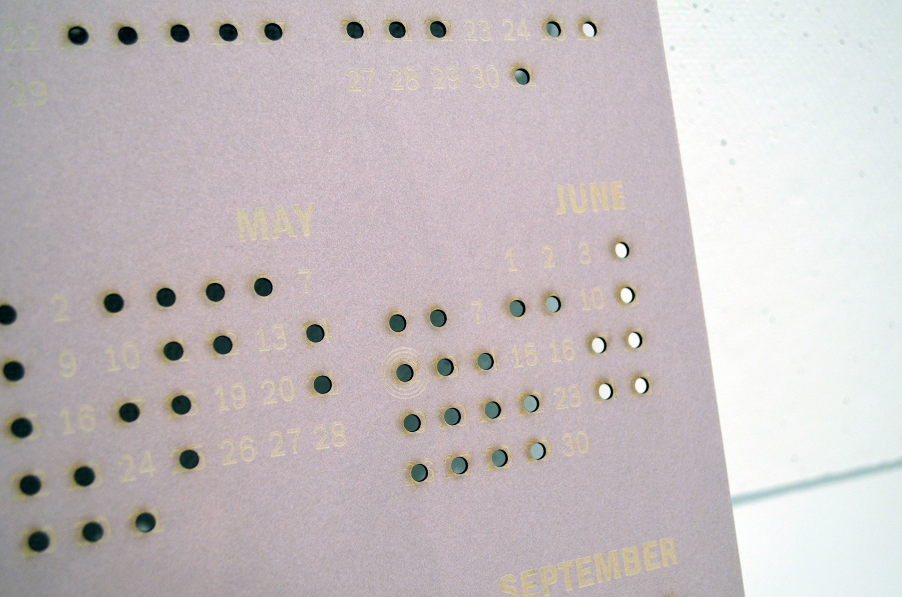

2016 Mass Shooting Calendar
A infographic poster on mass shooting made with laser cuter
When it comes to mass shooting, the United States is tragically exceptional. Specifically in 2016, the Orlando Nightclub Shooting, the deadliest U.S. mass shooting in American history, alarmed the entire nation. However, this tragedy is only one of the many almost daily occurrences in the United States. How often does Mass-shooting actually happen in the United States? This laser-cut calendar displayed exactly the days that mass shooting happened in 2016 (January-September).
The entire poster is made with a laser cutter. Created on a thin board, a basic 2016 calendar dates is first engraved, resulting a light text. Then using the laser cutter once again, it cuts out bullet-size holes on the dates in which mass shooting took place this year. There are also target rings engraved around certain dates to provide the information on the amount of people dead from mass shooting(s) that particular day. The key to this data is on the bottom.

